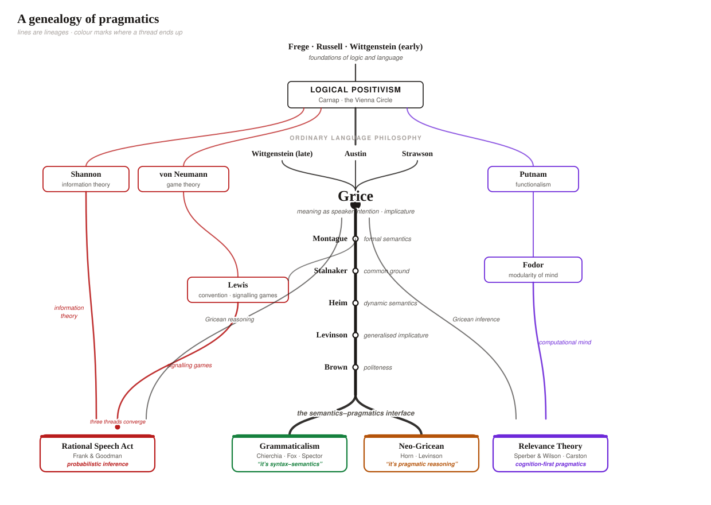

“

Trinity College Dublin
Coláiste na Tríonóide, Baile Átha Cliath
The University of Dublin
LI7862 · Linguistic Pragmatics
Week 1
Pragmatic Meaning
Dr. Thomas Stephen
School of Linguistic, Speech & Communication Sciences
Semester 1 · 2026
An unexceptional exchange
Small boy
Man
Passer-by
Is that your brother?
Small girl
Yes
Passer-by
It takes all sorts
Mother
It certainly does
Grundy, Doing Pragmatics, ch. 1 — overheard on a footpath
The question behind the module
Almost nothing said was what was meant
Man
One noun, no sentence, and yet a successful act: the boy shows off that he can recognise things. The grammar underdetermines what the utterance does.
Is that your brother?
Formally a question about kinship. Really a way of being polite to strangers one has been forced to notice — and your, not her, quietly selects who must answer.
It takes all sorts
Literally a platitude about the world. In context, a face-saving move that closes the encounter — and the mother's echo accepts it as one.
This term
Pragmatics is the study of how hearers get from what is said to what is meant — systematically, not by magic.
What is pragmatic meaning?
Central fact: speakers routinely mean more, or other, than the literal content of their words.
Semantics
Meaning contributed by linguistic expressions: what the words and their combination encode.
Pragmatics
Meaning contributed by use and inference in context: what is taken for granted, what the speaker is trying to achieve, what counts as a relevant move.
The boundary
A live research question — some “pragmatic” phenomena now have strong semantic analyses, and the border shifts as theories improve. It is where this course ends.
Through four strands
Today
Empirical
- Speech acts
- Implicature
- Presupposition
- Common ground
- Information
- Politeness
Historical
- Frege · Russell · Wittgenstein
- Positivism & Vienna
- Ordinary language
- Grice
- Three side threads
- The genealogy map
Formal
- Neo-Gricean
- Relevance Theory
- Rational Speech Acts
- Grammaticalism
- One datum, four ways
Applied
- Pragmatics in the wild
- Your project
I
Empirical
STRAND 01 / 04 · LI7862 · Week 1
The phenomena
A tour of the course in six intuitions — one for each block of the term. For each: what did they mean, and how did we know?
Is this true or false?
I now pronounce you husband and wife.
Empirical
Saying is doingWeek 2 · Speech Acts
I now pronounce you husband and wife.
Does it describe the world……or change it?
As a description
Neither true nor false at the moment of utterance — there is nothing yet to describe.
As an act
Said by the right person, in the right setting, the utterance performs the marriage.
The intuition
Some utterances are actions, not statements. They succeed or misfire — the question is what makes them felicitous, not what makes them true.
Is B coming to the party?
A
Are you coming to the party?
B
I have marking to do.
Empirical
Meaning without sayingWeek 3 · Implicature
What B saidWhat B meant
Said
B has marking to do. (About marking, not the party.)
Implicated
No — B is (probably) not coming.
And yet
I have marking to do — but I'm coming anyway. No contradiction. Meaning that arrives by inference can be taken back; meaning that is said cannot.
The intuition
Hearers compute what an answer is for. B's reply counts as an answer only via an inference the hearer supplies — an implicature.
What do both of these convey?
Version 1
Alex stopped smoking.
Version 2
Alex didn't stop smoking.
Empirical
Meaning that survives negationWeek 4 · Presupposition
The negation test
(1)Alex stopped smoking.asserts: Alex doesn't smoke now · conveys: Alex used to smoke
(2)Alex didn't stop smoking.asserts the opposite · still conveys: Alex used to smoke
The intuition
Some meaning is not asserted but presupposed — backgrounded, taken for granted, and untouched when the sentence is negated, questioned, or embedded. It behaves quite unlike implicature.
You never knew they had a car
Sorry I'm late — my car broke down.
Empirical
Updating the common groundWeek 5 · Common Ground & Projection
Sorry I'm late — my car broke down.
What happened
You didn't know the speaker owned a car. Nobody told you. Yet you didn't object — you quietly added it to the stock of shared assumptions and moved on.
Accommodation
Conversation runs on a common ground that both sides maintain and repair without noticing. Presuppositions that aren't yet shared get accommodated.
The intuition
Context is not a backdrop but a shared, constantly-updated object — and much of pragmatics is the bookkeeping of that object.
Same words — why does one answer fail?
Q
Who ate the beans?
A1
John ate the beans.
A2
# John ate the beans.
Empirical
Utterances carry informationWeek 6 · Information
The contrast
Both answers assert the same proposition. But stress marks what is new — and only A1 puts the newness where the question asked for it.
Behind it
Utterances are moves that reduce uncertainty relative to a question. What is informative depends on the live alternatives — an idea we can make precise, and even measure.
The intuition
Language use is structured by information flow: given → new, question → answer, high-surprisal where it matters. Shannon's theory of information enters linguistics here.
Same request — what changes?
To a sibling
Lend me a fiver.
To a friend
Could you lend me a fiver?
To a colleague
You couldn't possibly lend me a fiver, could you?
Empirical
Indirectness is calibratedWeek 8 · Politeness
The pattern
One request, three grammars. The wording grows more indirect — longer, more hedged, more negated — as the social distance and the size of the imposition grow.
Face
Speakers spend linguistic effort protecting each other's face: the wish to be unimpeded, and the wish to be approved of. Politeness is that expenditure, made systematic.
The intuition
Social meaning is not decoration on top of literal meaning — it is engineered into the grammar of the utterance, and it varies richly across cultures.
II
Historical
STRAND 02 / 04 · LI7862 · Week 1
A genealogy of pragmatics
How a field grew out of a fight about logic: from Frege and the positivists, through ordinary language philosophy, to Grice — and the threads that converge on today's four programmes.
Historical
The spine of the story
1879 →
Frege · Russell
Logic as the measure of language: reference, truth, logical form. Early Wittgenstein systematises the picture.
1920s–30s
Logical positivism
Carnap and the Vienna Circle: meaning is verification; everyday talk is logic gone soft.
1940s–50s
Ordinary language
Late Wittgenstein, Austin, Strawson: use, action, and appropriateness strike back at the ideal-language dream.
1957–75
Grice
Speaker meaning as intention recognition; cooperation and implicature make inference systematic.
1970s →
The interface
Montague, Stalnaker, Heim, Levinson, Brown: formal tools and language-in-use finally meet.
Plus three side threads — information theory, games & convention, and the computational mind — which join the spine late, and matter enormously for where we end up.
Historical
The logical foundations

Gottlob Frege
1848 – 1925
Begriffsschrift (1879): modern logic. Sense vs reference — Hesperus and Phosphorus name one planet, yet differ in meaning.

Bertrand Russell
1872 – 1970
On Denoting (1905): grammatical form misleads; logical form is where meaning really lives.

Wittgenstein (early)
1889 – 1951
Tractatus (1921): a sentence is a picture of a possible fact; language mirrors logic.
The move
Meaning becomes a matter of reference, truth and logical form — an enormous success, bought by pushing speakers, hearers and contexts out of the picture. Pragmatics is the story of letting them back in.
Historical
The high-water mark
Wovon man nicht sprechen kann, darüber muss man schweigen. ‘Whereof one cannot speak, thereof one must be silent.’ — Tractatus 7
The picture
Every meaningful sentence pictures a possible state of affairs; logic exhausts what can be said. Ethics, aesthetics, the everyday business of talking — beyond the limit.
The irony
Both Wittgensteins haunt this course: the early one inspires the positivists' ideal language; the late one — meaning is use — helps found the rebellion against it.
Historical
The ideal-language dream
Carnap
Rudolf Carnap
1891 – 1970
Vienna Circle; language as calculus
The doctrine
A sentence's meaning is its method of verification. What cannot be verified — metaphysics, ethics, much of ordinary talk — is strictly meaningless (Ayer 1936).
The method
Replace messy natural language with an ideal logical language. Russell's theory of descriptions is the showpiece: the F is G unpacks into pure logic.
Russell 1905 — The king of France is bald, made logical
(3)\( \exists x\,\bigl(F(x) \;\land\; \forall y\,(F(y)\rightarrow y=x) \;\land\; G(x)\bigr) \)there is exactly one F, and it is G — existence, uniqueness, predication; no mysterious reference to a non-existent king
Historical
The Vienna Circle & its export

Moritz Schlick
1882 – 1936
Convenor of the Circle: “the meaning of a proposition is the method of its verification.”

Otto Neurath
1882 – 1945
Unified science, protocol sentences — rebuild the boat plank by plank, at sea.
Ayer
A. J. Ayer
1910 – 1989
Language, Truth and Logic (1936) carries verificationism into English — your Week 1 reading's foil.
The verdict
On this programme most everyday talk — evaluation, ritual, indirectness, small talk on footpaths — is strictly meaningless. That verdict is the provocation pragmatics answers.
Historical
Ordinary language strikes back

Wittgenstein (late)
1889 – 1951
“For a large class of cases… the meaning of a word is its use in the language.” (PI §43)
Austin
J. L. Austin
1911 – 1960
Performatives: utterances that do things, judged felicitous or misfired, not true or false.
Strawson
P. F. Strawson
1919 – 2006
Against Russell: the king of France doesn't make (4) false — it makes it presuppose.
The turn
Where positivism saw defective logic, these philosophers saw orderly use: action, appropriateness, presupposition. The data of this course enter philosophy here.
Historical
Grice — the bridge
Grice
H. P. Grice
1913 – 1988
“Meaning” (1957) · the William James lectures (1967)
Speaker meaning
Natural vs non-natural meaning: to mean something is to intend the hearer to recognise that very intention. Meaning becomes a fact about minds, not just words.
Cooperation
Conversation is governed by rational expectations — the Cooperative Principle and its maxims. Exploit them and you get implicature: B's marking, calculated.
Why it matters
Grice reconciles the two camps: language is logical, and use goes beyond logic — systematically. Every programme in this course descends from this move.
Historical
Three threads from outside philosophy
Pragmatics did not grow from philosophy alone — three imports converge on it.
Information theory
- Shannon (1948): information as reduction of uncertainty
- Messages measured against alternatives
- Surprisal, efficiency, redundancy
feeds → Information · RSA
Games & convention
- von Neumann: strategic interaction
- Lewis (1969): convention as equilibrium; signalling games
- Speakers and hearers as rational players
feeds → Gricean reasoning · RSA
The computational mind
- Putnam: functionalism
- Fodor: modularity of mind
- Comprehension as fast, structured inference
feeds → Relevance Theory
Historical
The whole map at once

III
Formal
STRAND 03 / 04 · LI7862 · Week 1
Four contemporary programmes
Where the genealogy delivers us: four live research programmes that answer the same question with different machinery — and where this course ends.
Formal
Four programmes, one question
Week 9
Neo-Gricean
Horn · Levinson
Grice's maxims sharpened into scales and heuristics — some competes with all, and the hearer reasons over the scale.
“It's pragmatic reasoning.”
Week 10
Relevance Theory
Sperber & Wilson · Carston
A cognition-first pragmatics: comprehension maximises cognitive effect for processing effort, in a fast, dedicated inference system.
“It's how minds work.”
Week 11
Rational Speech Acts
Frank & Goodman
Speakers and listeners model each other probabilistically — Gricean reasoning implemented as Bayesian inference over alternatives.
“It's probabilistic inference.”
Week 12
Grammaticalism
Chierchia · Fox · Spector
The “pragmatic” inferences are computed inside the grammar, by silent exhaustification operators in the syntax–semantics.
“It's syntax–semantics.”
Formal
Neo-Gricean pragmaticsWeek 9
Horn
Laurence Horn
b. 1945
Two forces: hearer-directed Q (say enough) vs speaker-directed R (say no more).
Levinson
Stephen Levinson
b. 1947
Presumptive Meanings: implicatures as fast default heuristics (Q, I, M).
The bet
Grice was right — he just needs sharpening. Compress the maxims into principles, and organise words into scales: ⟨some, all⟩, ⟨or, and⟩, ⟨warm, hot⟩.
The machinery
Choosing the weaker term of a scale implicates the stronger one is false — a generalised implicature: default, fast, but still cancellable.
Formal
Relevance TheoryWeek 10
Sperber
Dan Sperber
b. 1942
Anthropologist-cognitive scientist; Relevance (1986, with Wilson).
Wilson
Deirdre Wilson
b. 1941
With Robyn Carston: explicature — pragmatics reaches inside “what is said.”
The bet
Drop the maxims; keep one principle. Utterances raise expectations of relevance: maximal cognitive effect for minimal processing effort.
The machinery
A fast, dedicated inference module: follow the least-effort path, enrich as needed, stop when expectations are met. Pragmatics as cognitive science.
Formal
Rational Speech ActsWeek 11
Frank
Michael C. Frank
Stanford
Reference games: quantitative pragmatics in the lab (2012, with Goodman).
Goodman
Noah Goodman
Stanford
Probabilistic models of cognition; language understanding as social reasoning.
The bet
Gricean reasoning can be implemented: speakers and listeners recursively model each other as approximately rational agents.
The machinery
A literal listener, a speaker who chooses informatively, and a listener who inverts the speaker by Bayes' rule: \( P_{L}(m \mid u) \propto P_{S}(u \mid m)\,P(m) \). Graded, testable predictions.
Formal
GrammaticalismWeek 12
Chierchia
Gennaro Chierchia
Harvard
Scalar inferences pattern with grammar — polarity, intervention, embedding.
Fox
Danny Fox & Benjamin Spector
MIT · ENS
Exhaustification formalised; alternatives computed compositionally.
The bet
These “implicatures” aren't post-hoc reasoning at all: they're computed inside the grammar, by a silent operator EXH ≈ only.
The evidence
Implicature-like meanings appear embedded — Every student read some of the papers — where global Gricean reasoning shouldn't reach. Weeks 9–12 stage this fight.
Formal
One datum, four ways
Some of the students passed. …and everyone hears: not all of them did
Neo-Griceanscales & maxims
Some sits on a scale below all. A cooperative speaker who knew all would have said it — so not all.
Relevance Theoryeffort & effect
The hearer enriches some just as far as needed for a relevant interpretation at reasonable processing cost.
RSABayesian listeners
A listener who models a rational speaker choosing between some and all assigns low probability to the all-worlds.
Grammaticalismexhaustification
A silent operator (≈ only) applies to some in the syntax — the “inference” is computed by the grammar itself.
The stakes
Same datum, four architectures of mind and grammar. Deciding between them is what weeks 9–12 are for.
IV
Applied
STRAND 04 / 04 · LI7862 · Week 1
Pragmatics in the wild
These phenomena are not laboratory curiosities — they run every conversation you will have today, and they are what your project will catch in the act.
Applied
Back to the footpath
It takes all sorts. — said by a stranger, about nobody, to end an encounter kindly
Appropriateness
Every utterance is fitted to its moment: to who may speak, to whom, about what. That fit — not just truth — is what speakers are judged on.
Indeterminacy
What an utterance means is often negotiated after the fact — the mother's It certainly does settles what the platitude was doing.
Reflexivity
Language comments on its own use constantly — hedges, echoes, scare quotes. Real conversation is pragmatics all the way down.
Applied
Your project catches it in the act
The module is assessed by a single research project — built up across the term, not crammed at the end.
Choose
A phenomenon (implicature, presupposition, politeness…) and a setting — a speech event or interaction type where it lives.
Collect
A small dataset: transcripts, excerpts, or a mini-corpus. Real use, not invented examples.
Analyse & write
Try analyses as we cover them, week by week; write it up research-paper style. Each week's tools are candidate instruments.
Housekeeping
How the module works
Lectures
Mondays, 10:00 – 12:00Hour 1: new material · Hour 2: guided data work
Office hours
Thursdays, 14:00 – 15:00or email for an alternative slot
Textbook
Grundy, Doing Pragmatics3rd edition · plus short weekly readings on Learn
Assessment
Research project · 100%due date on Learn · built up week by week
Weekly exercises are released on Learn — not assessed, strongly recommended; model answers follow. A typical week works through the four strands: the empirical phenomenon → its history → the formal machinery → how it plays out in real social use.
The term ahead
Week by week
Foundations & inference
01Pragmatic Meaning
02Speech Acts
03Implicature
Context & information
04Presupposition
05Common Ground & Projection
06Information
07Reading Week
Society & the programmes
08Politeness
09Neo-Gricean Pragmatics
10Relevance Theory
11Rational Speech Acts (RSA)
12Grammaticalism
Week 1 wrap-up
Four strands, one field
Empirical
Six intuitions — acts, implicature, presupposition, common ground, information, politeness — one per block of the term.
Historical
From the ideal-language dream through ordinary language to Grice — with three outside threads converging on the present.
Formal
Four live programmes — Neo-Gricean, Relevance Theory, RSA, Grammaticalism — four architectures for the same datum.
Applied
Real interaction runs on this machinery, and your project will document it in a speech event of your choosing.
Next week: Speech Acts. Austin and Searle in detail — performatives, felicity conditions, and direct vs indirect acts.